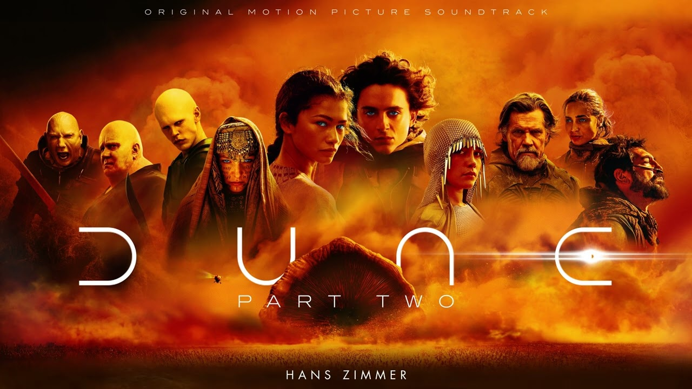
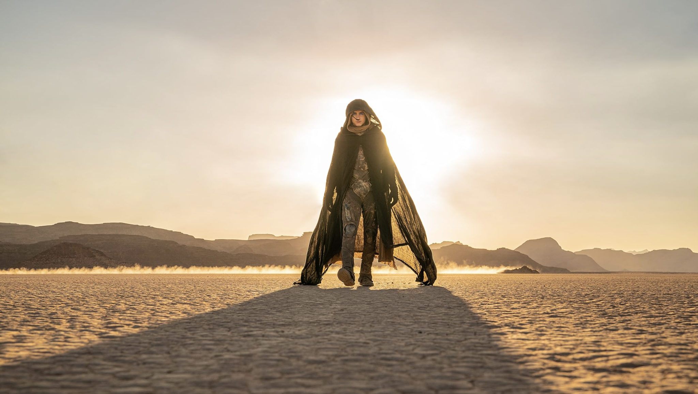

Dune: Part Two Personal Review

Opinions on Dune: Part Two
The only word I can use to describe this movie is pinnacle; watching this movie is a true cinematic experience. Dune: Part 2 is a movie in which you become easily captivated with the compelling plotlines, immersive soundtrack, and amazingly written characters. The soundtrack composed by Hans Zimmer is brilliant, and it truly makes you feel like you are inside the universe of Dune while watching. I personally loved characters like Stilgar for his loyalty and humor, Chani for her boldness and individuality, and Feyd-Rautha for his savagery and brilliant yet psychotic actions throughout the film. Also, Timothée Chalamet is a standout in this film mostly due to his brilliant acting and the way he makes you feel connected to the struggles that Paul Atreides is experiencing. I personally hold this movie as one of, if not the, best films I've ever watched. For anyone who hasn't yet seen Dune: Part Two, watch it as soon as possible.
Most Notable Elements of Dune: Part Two

Brief Overview of Dune: Part Two
The film opens near where the first left off, and it leads you through the journey of Paul Atreides learning the ways of the desert. He slowly is accepted by the Fremen, and learns of the prophecies forced upon them by the Bene Gesserit. He learns to travel without alerting the sand worms, the style of combat the Fremen use, and even to summon and ride a sand worm. His growth across the movie is astounding as he goes from anger toward the religions forced on the Fremen, to reluctance to accept his role in becoming "the one", and finally to him embracing his destiny and leading the Fremen to take Arrakis back from the Harkonnens. As the film progresses he gains a certain presence that makes you feel the power behind his abilities like the voice, his leadership, and his foresight. By the end of the film, he has fully grown into the leader of the Fremen and even challenges the dune universe Emperor's position and claims it as his own.